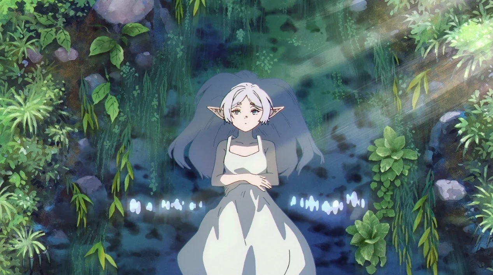

Frieren e a Jornada para o Além
Após uma missão de 10 anos ao lado do herói Himmel e seu grupo, a poderosa maga Frieren derrotou o Rei Demônio e trouxe paz ao reino. Como uma elfa, Frieren tem uma vida de mais de mil anos pela frente. Ela promete retornar para seus amigos e, assim, parte em uma jornada solitária. 50 anos se passam quando Frieren finalmente volta para visitar Himmel e os outros. Embora ela não tenha envelhecido nada, seus amigos têm pouco tempo de vida restante. É então que Frieren testemunha a morte de Himmel, o que a leva a lamentar não ter passado mais tempo junto dele. Com esse arrependimento em seu coração, ela embarca em uma nova jornada com o objetivo de se conectar e conhecer melhor as pessoas. Ao longo dessa viagem, a elfa Frieren encontrará diversas pessoas e viverá incontáveis aventuras emocionantes!